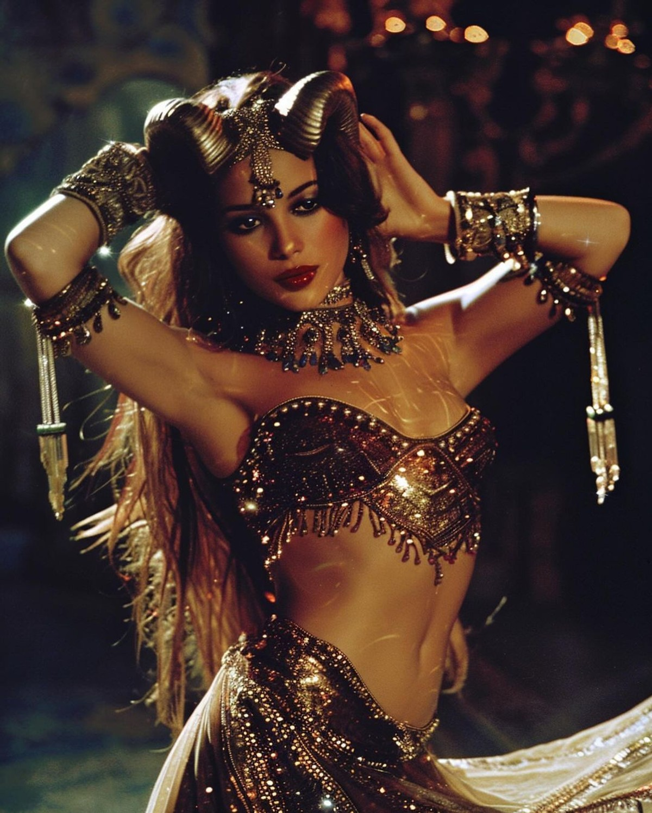

Dancer
Flagship PresencePerformance remains the strongest and most visible point of entry into the world of Badra.

About
Badra is a global artist, actress, and performer whose work also extends into teaching, business, and creative leadership. The identity is larger than one discipline.
Profile
Badra’s public image begins with performance, but her professional world reaches further: acting, international teaching, event environments, and a business mind that keeps the work moving. What remains constant is her visual force, her refusal to stop, and the way her image translates across stage, screen, and international cultural spaces.
Dancer
Flagship PresencePerformance remains the strongest and most visible point of entry into the world of Badra.
Actress
Screen LanguageCamera-led work adds cinematic range and a second register of presence beyond the stage.
Teacher
TransmissionWorkshops and intensives turn knowledge into structured access for dancers worldwide.
Businesswoman
Vision with StructureThe brand is sustained by clarity, professional rigor, and long-term self-direction.
Further reading
The rest of the site expands that identity through performance, screen work, Egypt, travel, education, and booking routes built for real clients and collaborators.